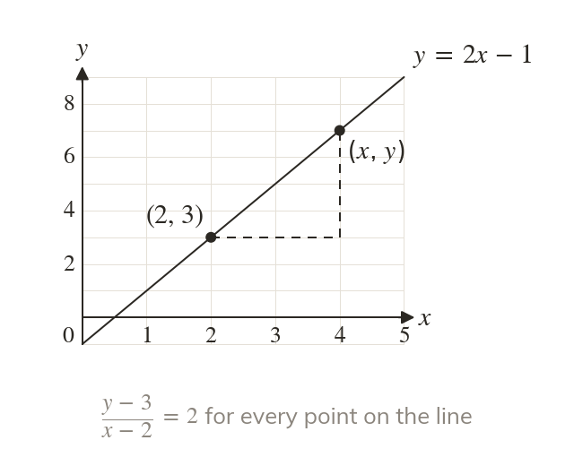
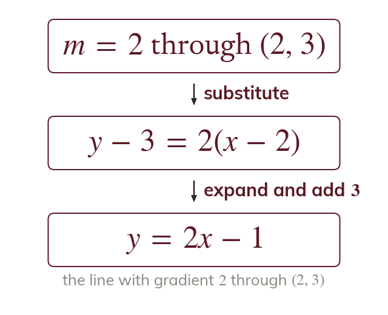
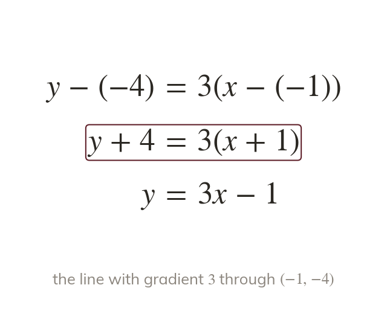
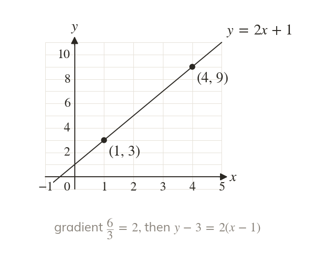
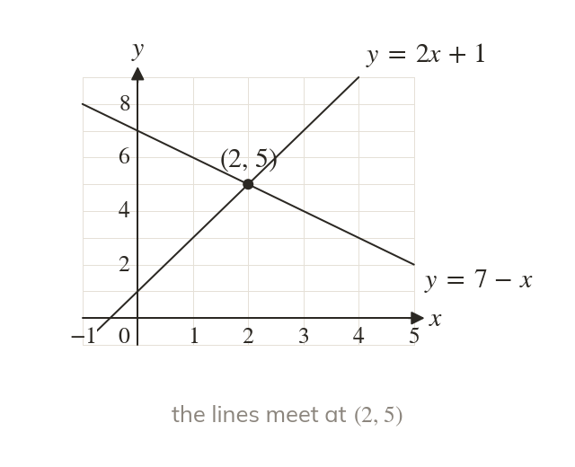
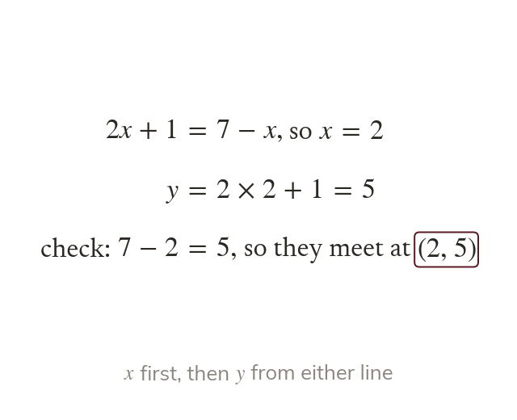

A point and a gradient
Any point on the line through with gradient gives
Multiply both sides by and the line is
Given a point and a gradient, writes down a line in one step, with no c to find first. A line through two points, and the point where two lines meet, follow from it, and next lesson uses it for parallel and perpendicular lines.
Work down the page at your own pace. Write every answer in your book first, then click to check it.
Read each card, then follow the worked examples one step at a time.

Any point on the line through with gradient gives
Multiply both sides by and the line is

Put and the point into then expand. Gradient through gives so

A negative coordinate changes the signs in the brackets. Gradient through gives which is
Pick an answer. If it's wrong, the feedback tells you which mistake it was.
Write the blanks in your book first, then tap each one to check.
Read each card, then follow the worked examples one step at a time.

For the line through two points, find the gradient first, then put either point into Through and the gradient is so and

The point where two lines meet lies on both, so solve their equations simultaneously. and meet where

Solve for then substitute back into either line to find Here so and ; the other line gives as a check.
Pick an answer. If it's wrong, the feedback tells you which mistake it was.
Write the blanks in your book first, then tap each one to check.
Finished? Next lesson: 12.P5.3 Parallel and Perpendicular Lines.
For each skill, tap the one that is true for you today. Your Revise pages start with anything you mark Not yet.
Your ratings are saved on this device only.
Log in, then search for a code to practise that skill.